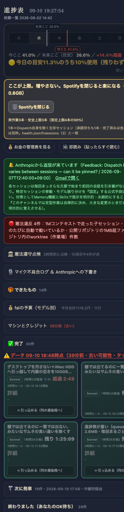

| 確認項目 | 結果 |
|---|---|
| queue_light.jsonが本番で200で返る | PASS(実測74420バイト) |
| queue_light.jsonにwhat/resultが1件も残っていない | PASS(0件) |
| queue.json(正本)を書き換えていない | PASS(md5一致) |
| 完了・取り消しは直近30件だけ軽量版に残す | PASS(30件) |
| カードを開いた時だけ指示文(what)を取りに行く | PASS(toggleイベントで実装) |
| 遅いスマホ回線(400kbps)実測・queue取得時間 | PASS(27.80秒→2.16秒・curl --limit-rate実測) |
| 初回表示までの合計転送時間(同条件) | PASS(32.13秒→6.49秒) |
| PWAがService Workerで古いデータを返していないか | PASS(未使用と確認・grep 0件) |
| PWA(start_url)とブラウザが同じURLを指しているか | PASS(どちらも./＝同一オリジン) |
| 本番モバイル幅スクリーンショットで実データが描画されるか | PASS(390px・完了30件など表示確認) |
| auto_launcher.pyの発車判定は壊れていない | PASS(finally節で分離・本体は無変更) |